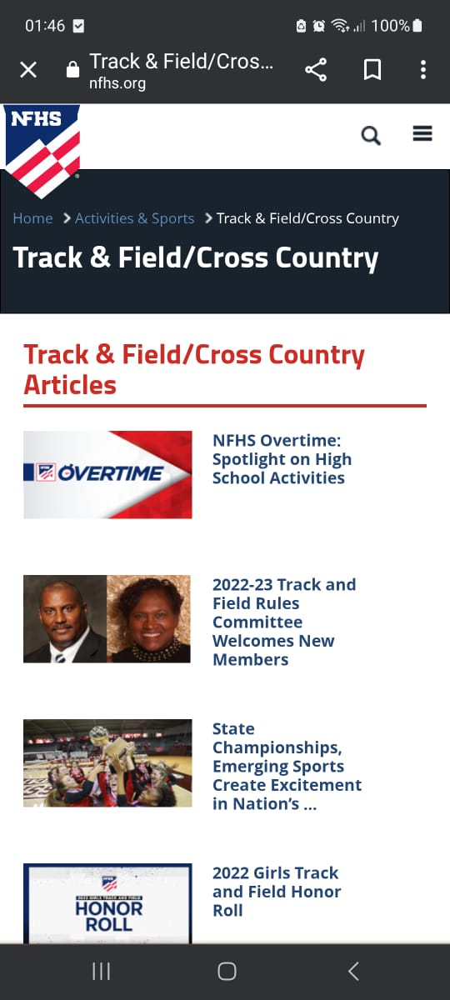
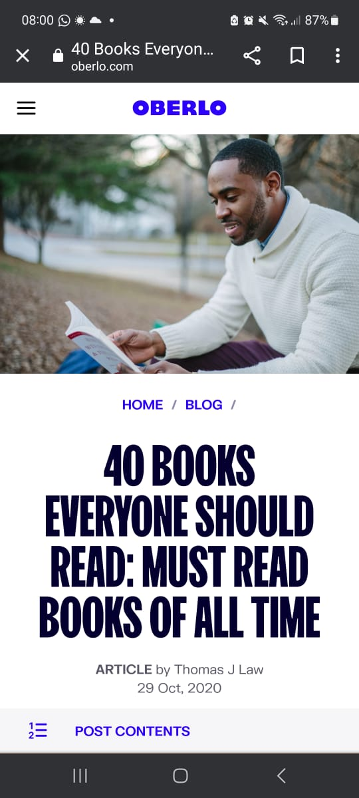

Alignment
Sports
Alignment simply refers to how elements are placed on a page. On this page we see that the designer puts content next to the picture. This helps us to quickly understand what is being explained on the picture without scrolling back and forth.
Dropbox
Holiday Travel
Designers use dropbox to create a clear and effective visual hierarchy that helps viewers. visual elements such as icons and images are used thus, enabling us to find the information we need and stay engaged with the content.
White Space
OBERLO
This website uses white space so that the reader only focuses on the information provided. There is use of white space between text blocks and those between each other. The negative area makes it easier to read as shown above.